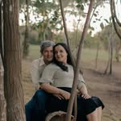

A
Assinatura sobre o diagrama
Adna Barbosa
gramática, lógica e fé, no papel
O nome escrito como uma assinatura, apoiado na linha do diagrama de frases. É a mais pessoal e a mais delicada.
Cinco jeitos de escrever o nome dela na abertura (A a E) e quatro estéticas para o site inteiro (1 a 4). O cabeçalho com o monograma AB fica igual em todas. Me diga uma letra e um número, ou o que misturar.
gramática, lógica e fé, no papel
O nome escrito como uma assinatura, apoiado na linha do diagrama de frases. É a mais pessoal e a mais delicada.
gramática, lógica e fé, no papel
Letra clássica de livro, fina e elegante. Combina com a educação clássica e com capas de editora.
A apresentação inteira vira uma frase diagramada: “Adna ensina gramática, lógica e fé”. Mostra o método antes de qualquer explicação.
gramática, lógica e fé, no papel
Um rótulo de bordas arredondadas, como o selo da capa de “Português em Mapas pela Bíblia”. Mistura a letra de livro com a letra à mão.
gramática, lógica e fé, no papel
A mesma letra do resto do site, em tamanho normal, só com o marca-texto ocre. É a mais discreta e deixa a frase diagramada brilhar.


Grade de pontos, molduras duplas, marca-texto e anotações à mão. Segue de perto os slides “Mapas mentais e a ilusão da matéria”.
Gramática, lógica e fé para formar mentes que discernem.
Fundo café escuro, letra de livro e detalhes em ocre, como uma estante antiga. Mais sério e mais solene.
Ensino a língua pela Palavra.

Muito espaço em branco, a foto dela grande na abertura e títulos em serifa. Pede uma foto em boa resolução.
Papel de mapa antigo, bússola e rotas tracejadas ligando as seções, como a capa de “Português em Mapas pela Bíblia”.
Como escolher: responda com uma letra e um número, por exemplo “A com 1” ou “B com 2”.
Dá para misturar: o nome de uma proposta com a estética de outra.